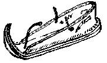

Please note that the following document is a work in progress.
It is doubtful that we will ever know when the first shoes were worn, or what those first shoes were like. As with all to many things, those records, if they were ever kept, have been lost to us. The traditions among shoemakers and historians have held that until relatively recently, shoes were probably just bag-like wrappings of fur or skins in the colder regions and that they remained like that until relatively recently. At least one source1 has described a cave painting (c.8000 BCE) showing "foot bags", presumably of leather, while another has shown images of shoes from Spanish cave paintings (??? BCE) that are interpreted to show furred boots.
The levels of sophistication on the items of footwear found so far, from the Fort Rock Cave,Oregon; Arnold Research Cave, Missouri; the Ice Man; the Warrior in the Cave; and from Buinerveen, the Netherlands, draws the traditions of primative footbags into question.
The Fort Rock Cave site, in Oregon, revealed a number of "sandals" of sagebrush bark, and these have been dated to c9000 BCE, although this date is argued anywhere from 9000 to 7000 BCE2. The Arnold Research Cave finds include a series of sandals and slippers ranging in date from 6000 BCE to roughly 1000 CE. many of these have been woven from plant fibers, neatly overlapping similar Anasazi footwear finds3.
The earliest European shoes we have archeological evidence for is the shoes worn by the so-called "Ice Man", who was found frozen in the Alps. His shoes consist of a rawhide bearskin sole, and an upper of woven plant fibers, and covered in the vamp by rawhide Deer. These date to about 3300 BCE.4
Nearly contemporanous with these are the shoes found on the so-called "Warrior in the cave" near Jericho. These consist of a compound sole that wraps up to the sides and front, and are secured by straps. The front seam was a thin leather thonging. They have been described as "sandals", but because of the wrapping up of the sides, and the fact that the toes are not involved in wearing that this counts as a shoe, and I believe that they are likely an example of the shoe called a KU�-E-SIR (or "outdoor shoe") in Sumerian. This find dates to the early fourth millenium.5
The Buinerveen shoes, which resemble more traditional views of European "bag shoes", gathered up by a thong, were dated (by pollen analysis by Groenman-van-Waateringe) to about 3000 BCE6. The Ice man's shoe, surprisingly, was made of multiple pieces of leather and woven quarters. The shoes we mostly see in finds from antiquity houwever, are single piece shoes, either like the Buinerveen shoe, wrapped up around the sides of the foot and tied with a thong, giving rise to the myth of the ubiquity of the bundschuh/hudsko, the "primative" single-piece "bag shoe" as it is even today sometimes referred to; or more often, center seam shoes, typified by those found in Greece and Rome. Even so, it may be noted that the single piece shoe has never totally faded from use, as can be seen in the forms of the bundeschuh, hudsko, or rifeling still in use. These are a shoe that was is carved or shaped from a fresh piece of "rawhide" (or untanned hide) that was laced to the foot, generally with the hair on the inside. These were, in later centuries, referred to as "cuaran" in Gaelic, "kreple" in Czech, "rifeling" in Saxon, also known as "riwelingas", "rewylynys", "rowlingas", "rulyions", "rullions", "rivilin" in the Shetlands, "rivelins" in Scotland and the Orkneys, "pampooties" in the Aran Islands, "skin-sko" in Iceland, and so on.
Based on the early dates of the shoes and sandals already mentioned, it seems odd that in the so-called "cradles of civilization", footwear seems to appear at different times in different places. A Syrian votive stature, shoes with upturned points seem to appear perhaps around 3000 BCE.8. In Sumer, by about 2600 BCE, Accadians were shown in art with upturned pointed shoes, and a pompom on the toe of the Hero who killed the most dangerous of creatures8. Sandals seem to appear by 2400 BCE. In the a number of texts from the First Dynasty of Isin (2300-2250 BCE), both shoes and sandles are referred to9 The shoes of the early Sumerian period were of two types, the KU�-E-SIR (or "outdoor shoe") and the KU�-MUL (or "indoor shoe"), a sort of slipper.5 Later, in Babylon and Assyria, shoes and boots were well known.
In Egypt, sandals appear in the so-called "Narmer Palate" from the 1st Dynasty (about 3000 BCE), held behind the Pharoah, and on an ivory tag. There appears to be some argument whether there are any early hieroglyphs meaning "sandal".7 They do not appear on the wall art, however before the 12th Dynasty (about 1990 BCE) while shoes don't seem to appear at all. However, in the 12th Dynasty, and afterwards, though, they are highly visible. In fact, there is some thought that sandal makers might have been highly regarded, based, on the monuments to shoemakers left from the New Kingdom (c. 1575-1087 BC)8. However, the tomb of Rekh-mi-Re, a Vizier from the 18th Dynasty, (c.1450 BCE), which gives us the earliest representation of a leather-sandal maker and his tools, doesn't display shoemakers any more prominantly than the many other trades it protrays, including that of a leather tanner.*7a A number of his tools, however, including his awls and his "head" knife, are easily recognisable.
Sandals in Egypt through its history take on a variety of forms, and ideotechnic aspects, for example women may not have worn them in general, although there is a portrait of at least one woman who did (although admittedly this is quite late, in the 5th C BCE). It may have been improper to wear sandals before social superior. Sandals have been found with soles made from leather, papyrus reed, and palm bast. Sandals with upturned points may have come in with the Hyksos (14th and 15th Dynasties (about 1674 - 1567 BCE)), who brought with them numerous other technological changes to Egypt, including weapons, armor, the horse, and the chariot8,12. These may have been assembled in a manner known as "stitchdown" construction in which the outer seam (in this case of hide lacing) is stacked and forms an outer seam along the edge. This gives an impression of a welted shoe, without the necessity of actually making a welted shoe.

There is an example of a one set of green leather "sandals" displayed in the "Salt Collection" in the last century resembling the triangular Hittite slippers with turned up toes made in this fashion. Their outer edge looks like it was stitched together with leather lacing.10 The Hittites were known for their upturned, pointed toe shoes by middle of 2nd millenium, and from them, the style became very popular throughout the Middle East8.
Shoes with upturned and pointed toes were very important through out the entire east, although it is not absolutely clear why this should be. It has been suggested that they were a vestigal "snow shoe" that simply caught on8, although I'm not certain that this is entirely plausible. It has also been suggested that this might have had something to do with phallic symbolism, although I am not convinced of that either.
The Greeks wore a wide variety of shoes and sandals. They were less impressed than their neighbors with pointed upswept toes, in general, believing these to be "eastern". Their preference was for sandals "Pedilia", and open toed shoes. When they wore shoes, they sometimes wore a shoe called a "Persikai", which implies a Persian origin. The Greeks should be noted, however for the marriage between the sandal and the center-lacing carbatina style that they called the "Krepis". By adding a sole to the center-laced design, they marked the way for the development of other soled shoes. Based on a painting on one vase, some authors have suggested that the Greeks wore shoes and boots made on lasts8, but to be honest, I'm less willing to make that assertion based on a vague picture of what might just be a pair of boots. According to Xenophon, shoe were made with sewn uppers, using sinew for the stitching9. Xenophon also describes the standardized division of shoemaking tasks, which is not documented again until the 16th century.
I should point out at this point that by referring to "shoe", I have been using a term that has a certain meaning, without solidly ascertaining that the meaning has its expected value. When we refer to a "Shoe" it seems often expected that we are referring to a garment, made from a separate upper and sole, made on a last, and sewn together, possibly in some form of welted construction. As far as I am aware (although I am continuing to research this topic), we have very little physical evidence to support that meaning this early on. Mostly these perspectives are based on a lack of archaeological data and pictures that do not contradict this impression. My suspicion is, and at this point this is simply speculation, the earliest assembled shoes were, like the Ice man's, a separate upper and sole, perhaps with a separation between vamp and quarters. Now, I realize that basing an opinion on the few items items we have, based on material from thousands of years apart is a risky proposition, and so I am more than happy to be proven wrong by anyone who actually has access to ancient (preferably pre-Roman) Middle Eastern and Levantine shoes.
Sources
- Salaman, R.A. Dictionary of Leather-working Tools, c.1700-1950, and tools of allied trades. New York: Macmillian, 1986, p.18
- Bedwell, S.F. Fort Rock Basin, prehistory and environment. Eugene Or: University of Oregon Books, 1973.
- Kuttruff, Jenna T., S Gall Dehart, Michael J. O'Brien. "7500 Years of Prehistoric footwear from Arnold Research Cave, Missouri" Science. 281 (3 July 1998) pp.72-5.
- Barfield, Lawrence. "The Iceman Reviewed" Antiquity 68 (1994): 10-26.
Spindler, Konrad. The Man in the Ice: the preserved body of a Neolithic man reveals the Secrets of the Stone Age. London : Weidenfeld and Nicolson, 1994.- Schick, Tamar. The cave of the warrior: a fourth millennium burial in the Judean desert. (IAA reports; no. 5) Jerusalem: Israel Antiquities Authority, 1998.
- Private correspondence with Olaf Goubitz (... 1998); Groenman-van Waateringe, W. "Society ... rests on leather" in Renaud, J.G.N., ed. Rotterdam Papers II, a contribution to medieval archeology. Rotterdam, 1975.
- Betro, Marie Carmela. Heiroglyphics, the Writings of Ancient Egypt. NY: Abbeville Pr., 1996. She refers to the disagreement among scholars on this point. Gardiner proposed that the Ankh was symbolic of a sandal strap seen from above, but other, more recent scholars dispute this since "Tht" and "Tb" refer to sandals.
- CIBA Review, "Development of Footwear", p.1211
- Forbes, R.J. "Leather in Antiquity" Studies in Ancient Technology. v.5 Leiden: E.J. Brill, 1966.
- Erman, Adolf Life in Ancient Egypt trans H.M. Tirard. New York: Dover, 1971 (originally London Macmillan & Co, 1894) referring to information in Wilkinson, J.G. Manners and customs of the ancient Egyptians... 1837. ii, p.336
- Wild 1968.
- Gabriel, Richard A. and Karen S. Metz. From Sumer to Rome, the military capabilities of ancient armies. New York Greenwood Press 1991.
When discussing Roman shoes, there are a number of points that are agreed on by scholars, and many that are not agreed upon at all. Many of the terms from the period are unclear, and some views extended of what shoes were what seem fairly speculative. Also, there is often, in the literature, the assumption that a term will mean the same thing through the duration of its usage. In this document, and on the Roman shoe pages I have attempted to refine these arguments as I understand them. If there are errors, they are mine and not the fault of my sources.
Roman footwear, like the Greek, was based primarily on three types of footwear, at least initially. These were the same sandals ("Solae"), Carbatinae, and the marriage of the two in the Calcei. There are other shoes that do not readily fall into these categories, but in general these appear to be the major types of shoe construction. What this means is that many of the items traditionally ascribed as "Roman sandals" actually aren't. For example, the Roman Soldier's "sandal", the caligae, is actually a type of Calcei with a large amount of cutting in the uppers, stitched up the back with a lapped seam, and laced up the front. An additional outer and inner sole were added and hobnailed into place. As the making of the calcei became more developed, the front sometimes began be stitched closed, as with the "latchet shoe". The Calcei had the extra soles attached using a Roman forma, a "last" of iron that shares much in common with the modern "Cobbler's last", an anvil for turning nail points. The use of the separate sole allowed the sole to be replaced when it wore out, and thereby minimizing leather wasted in the upper.
When a man went outdoors, he wore shoes, though they were heavier and less comfortable than sandals. Free men did not appear in public at Rome with bare feet unless they were extremely poor. And it is impolite to wear inside a house shoes worn in the street. If he rode to dinner in a litter, he wore sandals; if he walked, he wore shoes, while his sandals were carried by a slave. It was not correct to wear a toga without shoes, since calcei were worn with all garments classed as amicti (or appropriate "clothing").
Sandals become more acceptable wear for men after about 175 CE, with men's styles and women's diverging (Men's sandal soles becomgin rounder and more blunt in the front, while women's becoming more slender and narrow and developing a large, toe-like projection). In the latter half of the 3rd century sandals become extremely wide, almost triangular1, 2.
It appears that Roman shoes were made with thread for the uppers, and rawhide thonging for the soles. Footwear showed some interesting changes in the 3rd century, with all the medieval forms (sewn construction, butted seams, single later soles, and, as has been suggested, turnshoes) appearing, although rarely. The assymetrical shoe that would become prevalent in the post-Roman era made its first appearance at this time, and it is possible that by this time, wooden lasts were being used, based on the evidence of a last found in Rottweil, in Germany3.
Sources
- C. Van Driel-Murray. "Roman footwear: a mirror of fashion and society" Recent Research in Archaeological Footwear (Association of Archaeological Illustrators & Surveyors, Technical Paper no.8) 1987.
- Metcalf, A.C. and R.B. Longmore. "Leather Artifacts from Vindolandia" Transactions of the Museum Assistants' Group for 1973. no. 12
- G�pfrich, Jutta. Romische Lederfunde Aus Mainz. (Sonderdruck Aus dem Saalburg-Jahrbuch 42), Mainz Am Rhein: Verlag Philipp Von Zabern, 1986.
- C. Van Driel [Personal comunications]
Oddly, at least to me, these shoes, about which so little is known, and so little study done, representing a trivial population on the fringe of society, may provide vital clues to the development of footwear.
It seems apparent from what I have been told (since finding any information on these shoes is tricky at best) that by the 5th-6th centuries, the Coptic monks near Panopolis in the Akhmin nome of Egypt may have had the technology of turned work, and may have been making those shoes on lasts. They also had a variety of variations on welts (what archaeologists have been calling "rands"). Examples of their shoes and lasts are at numerous museums, including the Bata Shoe Museum in Toronto, and the Louvre in Paris. The dates they give for the shoes cover a wide range of dates as possible, the latest being generally the 8th or 9th C. If the latest date is correct, then the Copts did not have these far earlier than anyone else seems to. If the earlier dates are correct, then more attention should be paid to these finds.
In either case, however, they present evidence that several aspects of medieval European shoes (turnshoes, lasts, pointed toes, rands) were not developed in Europe, but may have been imports from the Middle East.
I should point out that, because of some disagreements with various scholars, for the sake of this article, I am using "turnshoe" to refer to shoes made like the Medieval turnshoe (inside out, with seams closed with a blind round closing, or what is called by archaeologists, a "flesh-edge stitch") and "turned work" to refer to any shoe made inside out, with any sort of closing.
Sources
(Note that the material after this point is still under construction.)
As sophisticated as shoes were by the end of the Roman Empire, by the end of the early Middle Ages in Britain and northern Europe shoes were fairly simple and uncomplicated affairs. Turned work was purportedly introduced to the north by the Saxons in the 5th Century, and by the 7th century, this appears to have replaced the center seam style of shoe that had prevailed in the areas of Roman influence. Whether the Saxons learned of this from the Byzantines, who, as may be seen by the Coptic shoes above, may have retained some tradition of turnshoes from the Roman period, maintained their own tradition of them, or re-developed them as a logical outgrowth of their own developments in footwear, we don't know for certain. There appears to me to be an evolution in footwear in northern Europe leading to turned work, and ultimately turned shoes. If turned work was an import from the Byzantines, then it is curious that the welt, or "rand", so common in Coptic shoes don't appear in the archaeology for a number of centuries after the earliest known Germanic turned shoes found at sites like Hedeby.
On the continent, the Roman style of sewing uppers with thread, while stitching on the soles with thonging remained, although in Britain at least (specifically in York), the thread in the uppers was also replaced by rawhide thonging. There is little archaeological evidence though for turned shoes before the 7th Century, and it can be assumed that before this, the shoes in common use would be either of the center seamed carbatine type, or the puckered sided Buinerveen types. Later, when the turned shoes started to appear, they were of a slip-on type or secured by a toggle-and-thong or tied-thong fastening, as depicted on contemporary or near contemporary art.
From the linguistic data, the most common term for shoe under the Saxons was "scoh", which would most likely have meant the ankle-boot styles. The "staeppescoh", the term used by the 8th C for slipper, is synonymous with the word "swiftlere", although that was only documented later in this period. Both of these terms are translated into the Latin "subtalaris" ("below the ankle") signifing a foot covering which was certainly lower than the ankle. "Socc", a term from the Roman "succus", which was a simple slipper consisting of an light upper and sole, later appears to have been synonomous with "slebescoh"/"slypesco" or slipshoe, or a "bag-like" foot covering that was easily slipped on. In some texts, however, "socc" appears to have been synonmous to "callicula" and "gallicula", both terms apparently derived from "caligae", while in others they may have referred to boots. "Tibracis" was apparently a form of leather boot. "Calc" and "crinc" refer to types of a sandal.
Buckles have been found in some Merovingian era graves that appear to either be from shoe, or on the gaitering worn on the leggings. Gradually this fashion spread into Britain. In the 7th C, there is evidence of metal (e.g. bronze) aglets on worsted cords used as shoe-laces.
By the later portion of the Early Middle Ages (or Dark Ages) turned work is the most common form of shoe found from the both the British and the Norse regions. Frequently, these shoes were ankle high, usually fastened by means of a triangular flap which covered the ankle, and was attached by a latchet, or with thongs which passed through slits in the leather and wrapped around the ankle. All this footwear is flat-soled and very plain. The shoes do not have exaggerated toes or ornamentation in the form of tooled leather; fancy stitching is extremely rare. Among the Norse shoes, the most notable features are the the large triangular heels and straight soles. These are representative of Norse shoes of the period until c1150, when the "waisted" sole and round heel found elsewhere became the norm. Many of these shoes, both on the Continent and in Britain, had a top band to help strengthen the top edge of the shoe.
There seem to be a number of different ways to sew these turned shoes together, but the most common stitches were a split/stabbed combination ("flesh/edge stitch") and the stabbed stitch ("flesh/grain stitch"). The most common thread for these shoes varied. Before the 10th century in Britain, for example, the most common thread for uppers was thonging. During the 11th century there was some experimentation with woolen thread and linen, but eventually linen won out and eventually even replaced the thonging used to stitch soles to the uppers.
Sources
- Carlisle, Ian R., Mould, Q., and Cameron, E., Leather and leatherworking in Anglo-Scandinavian and Medieval York. York Archaeological Trust, forthcoming,
- East, Katherine. "The Shoes" in Rupert Bruce-Mitford, The Sutton Hoo Ship Burial, v.3 (1980), 2. London. pp. 788-812.
- Groenmann-Van Waateringe, Willy. Die Lederfunde von Haithabu. (Berichte �ber die Ausgrabungen in Haithabu, Berichte 21) Neumunster : K. Wachholtz, 1984.
- Hald, Margrethe. Primitive Shoes: an archaeological-ethnological study based upon shoe finds from the Jutland Peninsula. Copenhagen: The National Museum of Denmark, 1972.
- MacGregor, Arthur. "Anglo-Scandinavian finds From Lloyds Bank, Pavement, and Other Sites." The Archaeology of York, v. 17 The Small Finds, fasc. 3. London: York Archaeological Trust, 1986
- Owen-Crocker, Gale R. Dress in Anglo-Saxon England. Manchester, Manchester University Press, 1986.
- Pritchard, Frances, "Small Finds", Aspects of Saxo-Norman London: 2 Finds and Environmental Evidence. ed. Alan Vince. (Special Paper 12) London and Middlesex Archaeological Society, 1991.
- Richardson, Katherine M. "Excavations in Hungate York", The Archaeological Journal (1959), v.116, p.51-114.
By the mid-12th century, the shoes had become more round heeled and notably waisted. There is a brief period in here where there was a bit of a vogue first for pointed toes, which during the reign of William II in Britain became exaggerated in their length. Although the pointed shoes remained on some shoes, the exaggerated point style faded away, gradually moving to the east. More important was the introduction of a welt, sometimes now called a rand, sewn into the seam between the upper and the sole. It is possible that both the welt and the pointed toes were introduced by Crusaders who had seen them in the Near East, although this is speculative. In some places the top band was replaced by the regular use of a leather binding stitch along the top edge, to strengthen and reinforce the edge. On the Continent, however, and especially in the Empire, the top band remained through out this period.
Iit may be, though, that the most important development in shoes of the 12th Century "little Renaissance" was the gradual professionalization of the craft into guilds or "mysteries". It is during this time that the term "Cordwainer" came to refer to the use of Cordwain, or Cordoban leather, and was later to became so associated with shoes that the terms for the material and the shoemaker became intertwined. The Cordwain / Cordoban / Cordovan leather first came from the skin of the Moufflon sheep, later goat skin, died cow hide. Previous to this time, for instance, the shoemaker often had to prepare his hides (Most often sheep, goat and calf) himself. Archaeological evidence suggests that in the 12th century a professional division of labor had taken place.
In any case, ideally shoemakers are not cobblers -- they are shoemakers, bootmakers, chaucers or cordwainers or any one of many terms. Cobblers, on the other hand, are restricted to using previously worked material, and so only FIX shoes.
It appears from the large numbers of shoes ordered during the 13th century and on, that there was some form of mass production in "readymade" shoes, as opposed to the traditional "bespoke" shoes made for specific individuals. What this meant for sizes is not clear, although three different prices given at this time suggest at least three basic sizes.
Sources
- Grew, Francis and Margrethe de Neergaard. Shoes and Pattens (Medieval Finds from Excavations in London: 2) London: Her Majesty's Stationary Office, 1988.
- Schnack, Christiane. Mittelalterliche Lederfunde aus Konstanz (Grabung Fischmarkt). Stuttgart: Landesdenkmalamt Baden-Wurttemburg. Materialhefte Zur Archaologie. Kommissionsverlag. Konrad Theiss Verlag, 1992.
- Schnack, Christiane. Die Mittelalterlichen Schuhe aus Schleswig : Ausgrabung Schild 1971-1975. (Berichte und Studien, 10. Ausgrabungen in Schleswig) Neumunster : K. Wachholtz, 1992.
- Swann, June. "The Mass Production of Shoes, From B.C. to 1856." Lecture given to Honorable Company of Cordwainers, Oct. 29, 1995.
Swann, June. "Mass Production of Shoes, 1229-72" ??? 1995.
In the 14th and 15th centuries, shoes again became more pointed in the toe, but rarely did the styles grow to any ridiculous lengths (although, at times this did happen). The designs in this manual are for shorter toes, although these may be modified as the cordwainer sees fit. By the 14th century, there was a greater standardization of shoe design, and an increase in the use of smaller pieces in more complex patterns. By the late 14th century, Pattens became common, as were more open-work decorative designs. Pattens, sometimes referred to as Clogs, were a form of overshoe or protective raised sole, first made from wood, then sometimes later of leather. In the 15th Century, shoe construction techniques changed with the evolution of "turn-welt" construction, from the rand techniques, which allowed heavier soles to be attached to the shoe.
Sources
- Grew, Francis and Margrethe de Neergaard. Shoes and Pattens (Medieval Finds from Excavations in London: 2) London: Her Majesty's Stationary Office, 1988
By 1480, it is thought in Germany1, the true welted shoe was developed in Germany, with shoes made rightside out on a last, and gradually spread across Europe, and then elsewhere in the world. The simple turned shoe remained for some time thereafter, seemingly as a less expensive shoe worn by laborers, seamen (such as Basque Whalers), footmen's "pumps", and so on. The basic slipper style and tied latchet shoe seemed most prominent of these turned shoes2.
The welted shoes were, for this period, upright shoes, made on straight lasts, neither rights nor lefts, likely because of the expense of maintaining differing styles of lasts for both feet. This is particularly true, once raised heels began to be developed (See Heels). Shoes with platform soles also were seen in this period (See Chopines, etc.)
Sources
- Private communication with D.A. Saguto.
- Davis, Stephen. "Piecing together the past: footwear and other artefacts from the wreck of a 16th-century Spanish Basque galleon." in Mark Redknap, Artefacts from Wrecks, dated assemblages from the Late Middle Ages to the Industrial Revolution. (Oxbow Monograph 84) Published by Oxbow Books on behalf of the Nautical Archaeology Society and Society for Post-Medieval Archaeology. Exeter: Short Run Press; , 1997..
Return to Contents
Footwear of the Middle Ages - Development of Footwear, Copyright � 1996, 1997,
1998, 1999, 2001 I. Marc Carlson.
This page is given for the free exchange of information, provided the author's name is
included in all future revisions, and no money change hands, other than as expressed in
the Copyright Page.